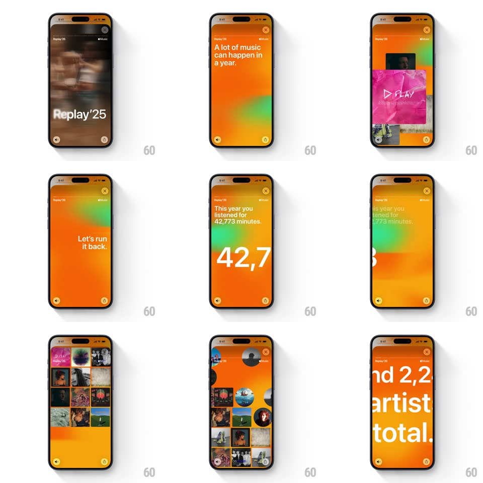

Media
Frame-by-frame

Rebuild this animation 1:1: Apple Music Replay '25's kinetic run - "Replay '25" over a blurred field, "A lot of music can happen in a year", the giant 42,773-minutes ticker, cascading album-art grids, and cropped jumbo type.

Rebuild this animation 1:1: Apple Music Replay '25's kinetic run - "Replay '25" over a blurred field, "A lot of music can happen in a year", the giant 42,773-minutes ticker, cascading album-art grids, and cropped jumbo type.
## Integration
Integration: stack-agnostic spec - springs given as stiffness/damping, timed motions as duration + curve; map every value to your framework and animation library of choice.
## Scene
A Replay '25 story run: the "Replay '25" title over a blurred blue field; an orange-to-green morphing gradient carrying "A lot of music can happen in a year." and "Let's run it back."; "This year you listened for 42,773 minutes." with the number rendered huge and cropped by the screen edge; album-art thumbnails cascading into a loose grid; and "And 2 artists total..." in jumbo cropped type with a small artist avatar.
## Motion spec
Pattern: kinetic typography with cascading art grids and giant number tickers.
- The gradient background morphs continuously (orange, green, gold blobs cross-blending, ~10s loops) under every scene.
- Headlines set word by word (100ms per word, each word rising 20px and fading in) - the type performs the sentence.
- The minutes number runs as a ticker: digits roll up from 0 to 42,773 (900ms, ease-out, odometer-style columns) at a size too big for the screen - the crop is intentional.
- The album grid cascades: thumbs drop in from the top in a staggered rain (80ms apart, each falling 40px with a soft spring ~320/16) into their grid slots, slight random tilt (+/-3deg) that relaxes to 0.
- Scene transitions slide horizontally (450ms, ease-out) with the gradient hue shifting mid-slide.
## Calibration
- Jumbo type gets cropped by the viewport - "2,773" should lose its edges; don't shrink it to fit.
- The cascade is quick but readable - each thumb must visibly land before the next three arrive.
## Reduced motion
Words fade in whole; number fades up final; grid fades in complete.
## Don't miss
- The copy is conversational ("Let's run it back.") - keep the casual casing and periods.
- Small artist avatars ride inside the jumbo type scenes - tiny circles against the giant words.